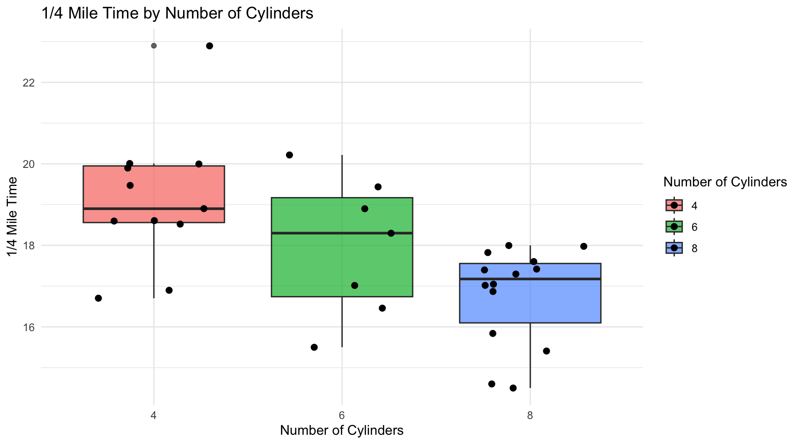

data("mtcars")DANL Project
Data-Driven Mastery: Road to excellence
0.1 Introduction
About this project üëè
In this project my group and I are using a data set of motor cars to determine the fastest cars, then we will decipher some parameters by what makes them the best.
1 Data
The data was extracted from the 1974 Motor Trend US magazine, and comprises fuel consumption and 10 aspects of automobile design and performance for 32 automobiles (1973–74 models).
1.1 Summary Statistics
rmarkdown::paged_table(mtcars)1.1.1 Summary Statistics
skim(mtcars) %>%
select(-n_missing)| Name | mtcars |
| Number of rows | 32 |
| Number of columns | 11 |
| _______________________ | |
| Column type frequency: | |
| numeric | 11 |
| ________________________ | |
| Group variables | None |
Variable type: numeric
| skim_variable | complete_rate | mean | sd | p0 | p25 | p50 | p75 | p100 | hist |
|---|---|---|---|---|---|---|---|---|---|
| mpg | 1 | 20.09 | 6.03 | 10.40 | 15.43 | 19.20 | 22.80 | 33.90 | ▃▇▅▁▂ |
| cyl | 1 | 6.19 | 1.79 | 4.00 | 4.00 | 6.00 | 8.00 | 8.00 | ▆▁▃▁▇ |
| disp | 1 | 230.72 | 123.94 | 71.10 | 120.83 | 196.30 | 326.00 | 472.00 | ▇▃▃▃▂ |
| hp | 1 | 146.69 | 68.56 | 52.00 | 96.50 | 123.00 | 180.00 | 335.00 | ▇▇▆▃▁ |
| drat | 1 | 3.60 | 0.53 | 2.76 | 3.08 | 3.70 | 3.92 | 4.93 | ▇▃▇▅▁ |
| wt | 1 | 3.22 | 0.98 | 1.51 | 2.58 | 3.33 | 3.61 | 5.42 | ▃▃▇▁▂ |
| qsec | 1 | 17.85 | 1.79 | 14.50 | 16.89 | 17.71 | 18.90 | 22.90 | ▃▇▇▂▁ |
| vs | 1 | 0.44 | 0.50 | 0.00 | 0.00 | 0.00 | 1.00 | 1.00 | ▇▁▁▁▆ |
| am | 1 | 0.41 | 0.50 | 0.00 | 0.00 | 0.00 | 1.00 | 1.00 | ▇▁▁▁▆ |
| gear | 1 | 3.69 | 0.74 | 3.00 | 3.00 | 4.00 | 4.00 | 5.00 | ▇▁▆▁▂ |
| carb | 1 | 2.81 | 1.62 | 1.00 | 2.00 | 2.00 | 4.00 | 8.00 | ▇▂▅▁▁ |
2 Visualization #1
car_models <- rownames(mtcars)
ggplot(mtcars, aes(x = reorder(car_models, -qsec), y = qsec)) +
geom_point(color = "blue") +
labs(title = "1/4 Mile Times by Car Name",
x = "Car Name",
y = "1/4 Mile Time") +
theme(axis.text.x = element_text(angle = 45, hjust = 1))car_models <- rownames(mtcars)
mtcars$cyl <- factor(mtcars$cyl)2.1 Explanation
This graph gives a visual representation of the quarter mile times of various motor cars in descending order.
3 Visualization #2
ggplot(mtcars, aes(x = factor(cyl), y = qsec, fill = factor(cyl))) +
geom_boxplot(alpha = 0.7) +
geom_point(position = position_jitter(width = 0.3), color = "black", size = 2) +
labs(title = "1/4 Mile Time by Number of Cylinders",
x = "Number of Cylinders",
y = "1/4 Mile Time",
fill = "Number of Cylinders") +
scale_fill_discrete(name = "Number of Cylinders") +
theme_minimal()
3.1 Explanation
This graph allows you to visually see the difference in quarter mile time and how it varies by the number of cylinders in the vehicle. As you can see the vehicles with fewer cylinders can generally be seen with a slower quarter mile time.
4 Visualization #3
ggplot(mtcars, aes(x = wt, y = qsec, color = cyl)) +
geom_point() +
labs(title = "Scatter Plot of Quarter Mile Time vs. Weight by Number of Cylinders",
x = "Weight (1000 lbs)",
y = "Quarter Mile Time") +
scale_color_discrete(name = "Number of Cylinders")4.1 Explanation
This visualization is similar to the last one except that this graph also shows the weight distribution among the vehicles, generally we can see that cars with more cylinders will be heavier than their counterparts.
5 Visualization #4
ggplot(mtcars, aes(x = hp, y = qsec, color = factor(vs))) +
geom_point(size = 3) +
labs(title = "Quarter Mile Time by Horsepower and Engine Type",
x = "Horsepower",
y = "Quarter Mile Time") +
scale_color_discrete(name = "Engine Type", labels = c("V-shaped", "Straight")) +
theme_minimal()5.1 Explanation
Here we can decipher the quarter mile time in terms of the vehicles horse power and engine type, as we can see, as horse power grows, the quarter mile time goes down. At the same time most vehicles contain a V-Shaped engine that how the faster quarter mile times.
6 Visualization #5
library(dplyr)
library(ggplot2)
top_5_fastest <- mtcars %>%
arrange(qsec) %>%
head(5)
print(top_5_fastest[, c("mpg", "cyl", "hp", "wt", "qsec")]) mpg cyl hp wt qsec
Ford Pantera L 15.8 8 264 3.17 14.50
Maserati Bora 15.0 8 335 3.57 14.60
Camaro Z28 13.3 8 245 3.84 15.41
Ferrari Dino 19.7 6 175 2.77 15.50
Duster 360 14.3 8 245 3.57 15.84top_5_fastest$car_names <- rownames(top_5_fastest)
variables_to_plot <- c("cyl", "hp", "wt")
plot_list <- lapply(variables_to_plot, function(var) {
ggplot(top_5_fastest, aes(x = reorder(car_names, qsec), y = get(var), fill = factor(cyl))) +
geom_bar(stat = "identity", position = "dodge") +
labs(title = paste("Top 5 Fastest Cars -", var),
x = "Car",
y = var,
fill = "Cylinders") +
theme_minimal() +
theme(axis.text.x = element_text(angle = 45, hjust = 1))
})
library(patchwork)
plot_list[[1]] + plot_list[[2]] + plot_list[[3]]6.1 Explanation
Finally, this visualization shows how 3 variables (weight, cylinders, and horsepower) differ in each fastest car (from left to right).